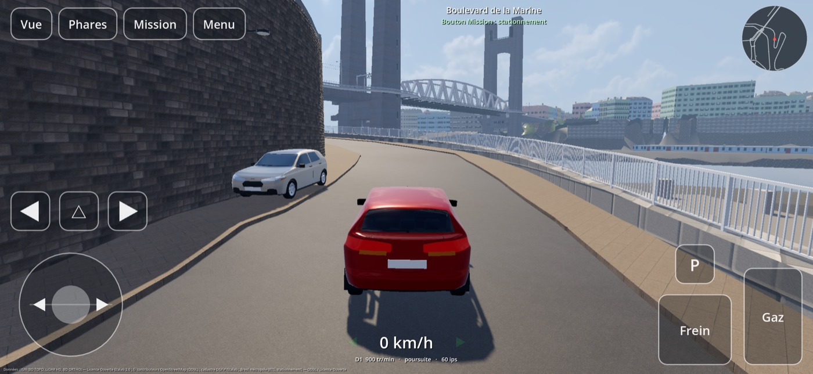
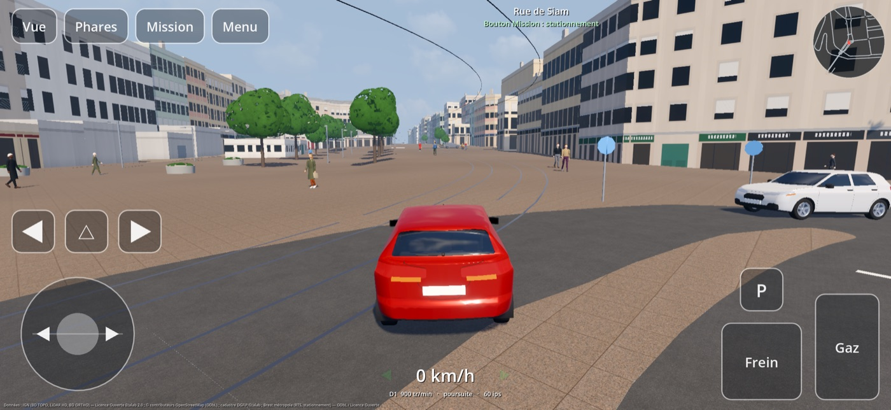
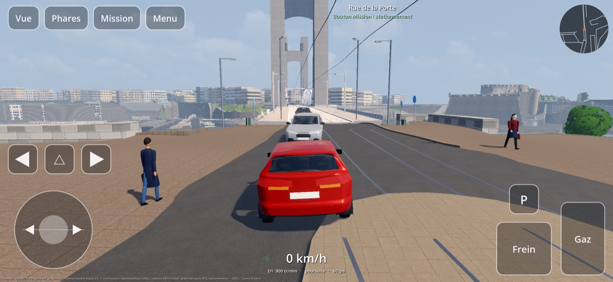
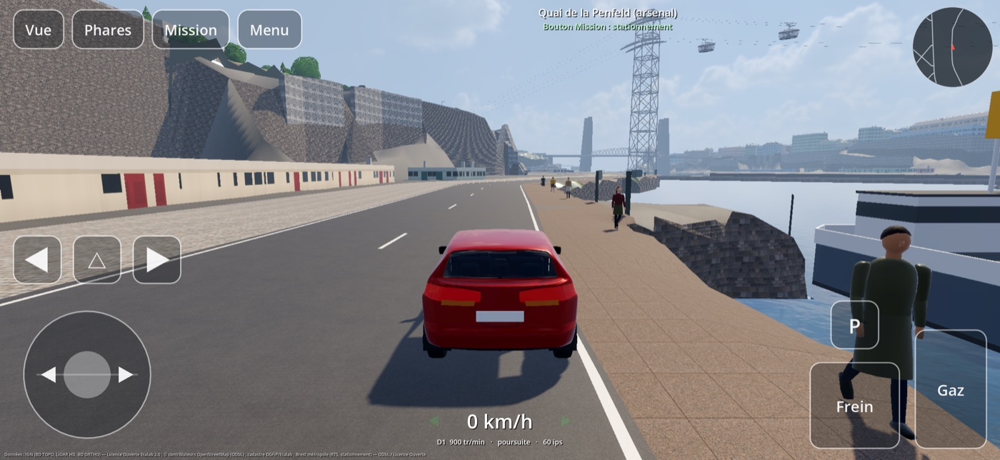
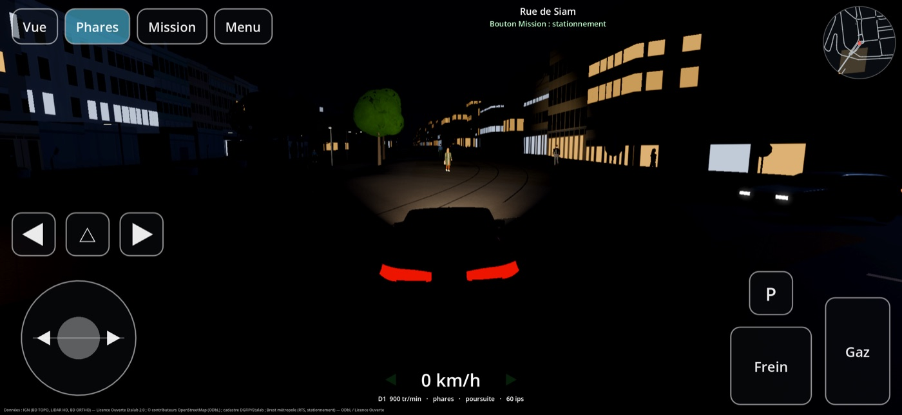
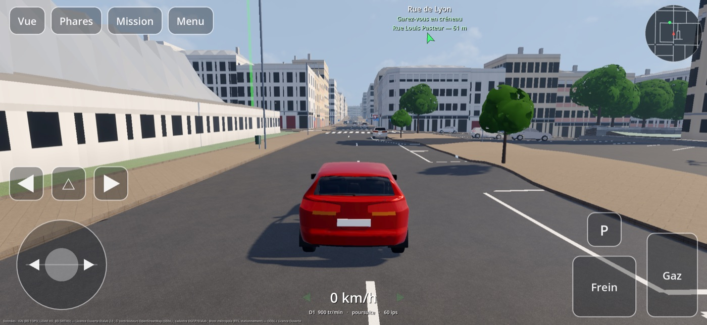

Prenez le volant dans Brest, rue par rue. La ville du jeu est construite d'après les données publiques : le relief, les rues et leurs largeurs, les trottoirs, les bâtiments, les murs du boulevard de la Marine, les ponts de Recouvrance et de l'Harteloire, les feux des carrefours, les places de stationnement. On y croise la circulation, le tram et les passants, on se gare, on cherche une rue, on rentre du travail. Pour iPhone et iPad, à l'horizontale, en plein écran, sans compte ni connexion.






La ville
- Toute la commune : près de 2 000 rues à parcourir sur 52 km², le centre, Recouvrance, Siam, Saint-Martin, Kérinou, Saint-Pierre, Lambézellec, Bellevue, l'Europe, Saint-Marc, le port de commerce, de la route de la Corniche au Moulin Blanc.
- Le relief réel, mesuré au laser (LiDAR de l'IGN) : les rampes, les murs de soutènement et les remparts, les ponts au-dessus de la Penfeld et des vallons.
- Les sens de circulation, les feux et les stops des carrefours réels, les places de stationnement là où la ville les a tracées.
- L'arsenal est ouvert à la conduite : on y entre par la porte Tourville ou la porte de la Brasserie et l'on longe le quai de la Penfeld.
La vie urbaine
Des voitures et des utilitaires circulent autour de vous aux vitesses réglementaires : ils s'arrêtent aux feux, marquent les stops, cèdent le passage, clignotent avant de tourner et s'arrêtent devant votre voiture. Le tram de la ligne A dessert ses stations. Les passants marchent sur les trottoirs et traversent aux passages piétons. Trois ambiances : éclaircies, temps couvert, nuit.
Que faire à Brest ?
| Mode | Ce qu'on y fait |
|---|---|
| Conduite libre | Partir d'un des points de départ, ou de n'importe quelle rue : on en tape le nom et la voiture y est posée. |
| Stationnement | Une place libre est désignée à quelques centaines de mètres ; une fois la voiture immobilisée, la manœuvre est notée sur 100 : position, angle, distance au trottoir, contacts, nombre de manœuvres. Radar de recul et vue de dessus pour apprendre. |
| Rendez-vous dans une rue | Une rue tirée au hasard, à trouver sans guidage. Un indice donne la distance et la direction, contre 30 secondes. |
| Journée de travail | Avec Grue Flottante : le soir, on quitte le poste d'attache de la grue « Alpaga » dans l'arsenal, on sort par la porte Tourville et l'on rentre chez soi, ou l'on fait une tournée d'adresses en ville ; le matin, le chemin inverse, et « Prendre son service » ouvre Grue Flottante. Sans elle, la journée se lance depuis le menu. |
Deux voitures, et des commandes au choix
Une citadine, ou une berline sportive turbo à quatre roues motrices. Les commandes tactiles sont faites pour le pouce : volant à gauche, accélérateur et frein à droite, frein à main, clignotants, warning, phares. Une manette de jeu se branche aussi. Quatre vues : poursuite, capot, conducteur et dessus.
Sans rien de superflu
Pas de compte, pas de publicité, aucun achat intégré, aucune donnée collectée. Toute la ville est dans l'app : elle se joue hors connexion. Conseillé : iPhone 13 ou plus récent, iPad avec puce M1 ou plus récent.
D'où vient la ville
Relief, bâtiments et photographies aériennes : IGN (BD TOPO, LiDAR HD, BD ORTHO), Licence Ouverte Etalab 2.0. Rues, sens de circulation et lieux : © les contributeurs d'OpenStreetMap, licence ODbL. Parcelles : cadastre DGFiP / Etalab. Bordures, murs, feux et stationnement : Brest métropole (relevé topographique, stationnement sur voirie), licences ODbL et Licence Ouverte. Textures : Poly Haven et ambientCG (CC0). Les bâtiments sont simplifiés et la ville n'est pas un relevé : quelques rues peuvent s'écarter de la réalité.